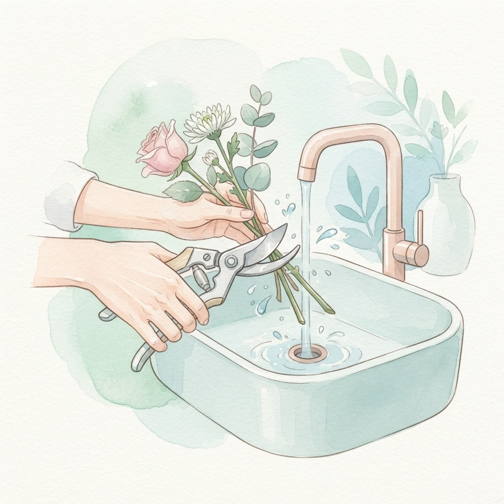

.png) SHIBUYA GRAND FLORIST
SHIBUYA GRAND FLORIST
SHIBUYA GRAND FLORIST
SHIBUYA GRAND FLORIST
Na Shibuya Grand Florist (Midori no Hibi - 緑の日々),você encotrara O passo a passo de como presevar seu buque de flores

1. Corte as hastes na diagonal Antes de colocar as flores no vaso, corte cerca de 2 cm das pontas dos caules em um ângulo de 45 graus (de preferência sob água corrente). Isso aumenta a área de absorção e evita que a haste encoste totalmente no fundo do vaso.

2. Retire as folhas inferiores Remova todas as folhas que ficarem abaixo da linha da água. Folhas submersas se decompõem rapidamente e favorecem a proliferação de bactérias que reduzem a vida útil do buquê.

3. Mantenha a água sempre limpa e fresca Preencha um vaso limpo com água fresca em temperatura ambiente (e o conservante floral, se disponível). Troque a água completamente a cada 2 dias, lavando o vaso e refazendo um pequeno corte nas hastes.

4. Escolha o local ideal Posicione o arranjo em um ambiente iluminado e arejado, mas longe da luz solar direta, de correntes de vento fortes, aparelhos de ar-condicionado ou frutas maduras (que liberam gás etileno e aceleram o envelhecimento das pétalas).